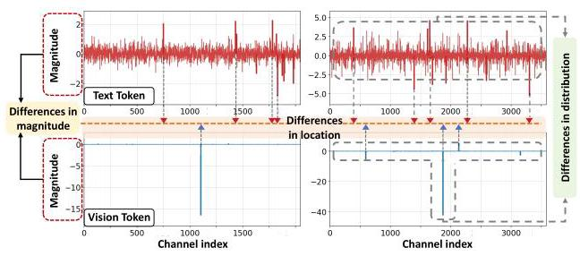
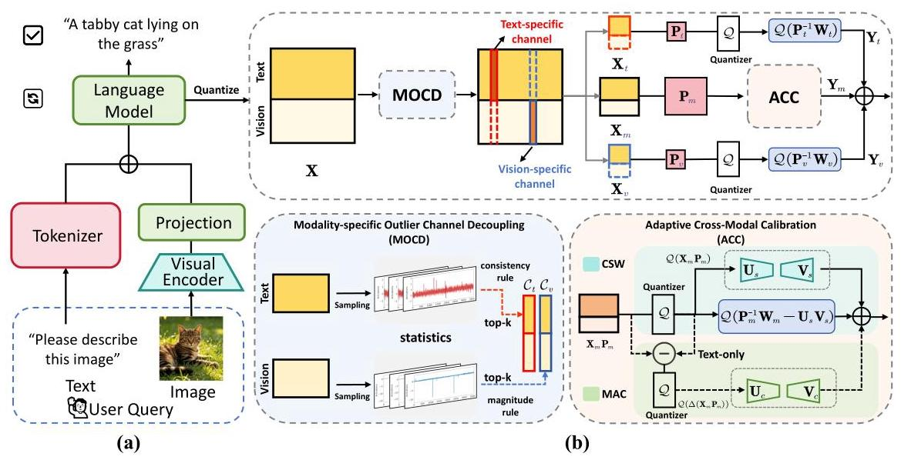
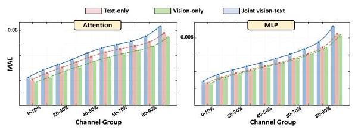
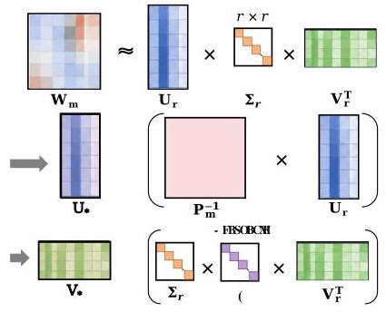

Breaking Modality Heterogeneity in Low-Bit Quantization for Large Vision-Language Models 深度解读
作者：Yi Zhong, Haotong Qin, Xindong Zhang, Lei Zhang, Guolei Sun
会议/期刊：arXiv 2026（arXiv:2605.19929v1，论文中未标注会议接收信息）
一句话总结：这篇论文提出 SplitQ，用 modality-specific outlier channel decoupling 和 adaptive cross-modal calibration 解决 VLM 低比特 PTQ 中图像/文本激活分布互相干扰的问题，使 Qwen2.5-VL 与 LLaVA-v1.5 在 W4A4、W3A3 甚至 W3A2 下仍能保持可用精度。
一、问题定义
这篇论文解决的是 Vision-Language Model（VLM）部署中的低比特 post-training quantization（PTQ）问题。VLM 推理时通常先把图像送入 visual encoder，再把视觉 token 与文本 token 一起交给语言模型部分；为了降低显存、带宽和算力开销，工程上希望把权重和激活都压到 W4A4、W3A3、W3A2 这样的低精度配置。传统 LLM PTQ 的一个重要路线是 transformation-based PTQ：在 linear layer 中插入等价变换矩阵 P，把激活中的 outlier 转移或平滑到权重侧，从而让量化误差更小。
问题在于，VLM 不是纯文本 LLM。图像 token 和文本 token 共享同一个 LLM backbone，但它们在 activation channel 上的分布不同：视觉 token 更容易在少数 channel 上出现很大的 magnitude outlier，而文本 token 的异常更像跨 token 的相对响应不稳定。已有 transformation-based PTQ 往往对所有 token 和所有 channel 学一个共享变换，或者粗略按模态分别处理，这会把两类分布差异揉在一起，导致优化目标被互相污染。

上图是论文动机的核心证据：同一层里，文本和视觉激活不只是数值尺度不同，异常 channel 的位置也不同。换句话说，"多模态异质性"不是一个全局缩放问题，而是一个 channel-wise structural distribution 问题。
本文属于非 First 类型工作：VLM quantization 和 transformation-based PTQ 已有较多研究，SplitQ 的切入点是指出现有方法没有把 modality-specific outlier channel 明确拆开，也没有在拆开后继续处理主通道里的残余跨模态误差。
动机评估：动机比较 solid。论文用 Figure 2 展示分布差异，用 Figure 3 展示 joint vision-text calibration 会放大权重量化误差，并在 Table 1 中显示普通方法在 W4A4 下几乎崩溃，而 SplitQ 仍能接近 FP16。不过也要注意，论文主要围绕 Qwen2.5-VL 与 LLaVA-v1.5，且默认只量化 LLM component；对更多 VLM 架构、端侧硬件和真实 mixed workload 的覆盖仍然有限。
核心 Insight：跨模态异质性不是均匀铺在所有 channel 上，而是集中在少数、且文本/视觉位置不同的 channel 上。因此，先把 vision-specific 与 text-specific outlier channel 从主通道中拆出来分别量化，再对剩余 main channel 做轻量校准，比强行用一个全局变换去兼顾所有模态更合理。
二、相关工作
论文把相关工作分成两条主线。
第一条是 LLM quantization。按训练阶段分，有 quantization-aware training（QAT）和 post-training quantization（PTQ）。QAT 通常精度更好，但需要额外训练，成本高；PTQ 更适合快速部署。PTQ 又可以分为 weight-only quantization 和 weight-activation quantization：前者降低权重显存，后者进一步降低激活带宽和计算开销，但更容易被 activation outlier 影响。GPTQ、AWQ、SmoothQuant、OmniQuant、SpinQuant、FlatQuant 等方法分别从二阶近似、salient channel 保护、activation smoothing、learned clipping、rotation/affine transform 等角度改进量化友好性。
第二条是 VLM quantization。VLM 中额外出现了 modality-dependent activation distribution、视觉 token 冗余、KV cache 开销等问题。MBQ 在 calibration 时考虑不同模态敏感性，MQuant 给视觉/文本 token 分配静态 scaling，MASQuant 学 modality-aware smoothing factor，Q-VLM、VLMQ、QSVD、WSVD、Bi-VLM 分别从 block partition、token saliency、SVD 压缩、head-level low-rank、hybrid quantization 等角度切入。这些工作说明 VLM 量化不能完全套用 LLM 经验，但它们要么没有显式分离 modality-specific outlier channel，要么没有解决拆分后 main channel 中残余跨模态误差。
SplitQ 的位置可以理解为：站在 FlatQuant/SmoothQuant 一类 transformation-based PTQ 的基础上，把 VLM 的问题进一步细化到 channel 级别，并用低秩补偿分支处理剩余误差。
三、技术挑战
挑战 1：跨模态差异是 channel-wise 的，不是简单的全局尺度差异。 如果只是给文本和视觉各自一个静态缩放，仍然会错过"异常 channel 位置不同"这个结构信息；如果继续用共享 P，异常 channel 会互相拉扯优化目标。
挑战 2：文本和视觉 outlier 的判定准则不同。 视觉 outlier 可以较自然地用最大绝对激活衡量；文本 outlier 不总是最大 magnitude，而是跨 token 的相对响应不稳定。因此，简单用同一个 top-k magnitude 规则选文本/视觉 channel 会选错。
挑战 3：拆掉显著 outlier 后，main channel 仍有残余跨模态误差。 论文观察到 FlatQuant+MOCD 在 W4A4 表现很好，但到了 W3A3/W3A2 仍不够稳定，说明主通道里的细微分布差异在 ultra-low-bit 下会被放大。
挑战 4：低秩补偿要同时满足可学习、不过拟合和可量化。 校准样本有限，完全自由的 LoRA/QLoRA 式参数容易过拟合；固定 SVD 又不适应图文异质分布。SplitQ 需要一个被主权重结构约束、但仍能自适应重加权的低秩形式。
挑战 5：多分支设计必须有实际部署价值。 MOCD、CWS、MAC 都会引入额外分支和算子，如果没有 fused kernel 或者低比特下的收益不足，方法可能只在离线精度表里好看。
四、解决方案
整体思路
SplitQ 的整体逻辑是"先拆明显冲突，再校准残余误差"。它先用 MOCD（Modality-specific Outlier Channel Decoupling）把输入 channel 分为三组：modality-compatible main channels、text-specific outlier channels、vision-specific outlier channels。文本和视觉专属 channel 分别走独立变换和量化路径，避免互相干扰；主通道再通过 ACC（Adaptive Cross-Modal Calibration）处理剩余的 weight-side 与 activation-side 量化误差。

Figure 1 把这个流程串起来：输入激活 X 先被 MOCD 拆成 X_t、X_v、X_m；文本/视觉 outlier channel 使用各自的 P_t、P_v 变换，主通道使用 P_m 与 ACC；最后三个路径的输出相加，得到量化 linear layer 的输出。
贯穿示例
可以把一个 VLM linear layer 想象成一排传感器 channel，它同时接收两种货物：图像 token 和文本 token。少数传感器对图像货物特别敏感，一来图像 token 数值就爆高；另一些传感器对文本货物不是绝对值最高，但它们在不同文本 token 上排名变化很大，导致量化时不稳定。如果把所有货物混在一起调一套刻度尺，视觉异常会把尺子拉大，文本细节会被压扁；文本不稳定又会让视觉平滑不准。SplitQ 的做法是先把"图像专用异常传感器"和"文本专用异常传感器"单独拿出来各调各的尺子，剩下大多数正常传感器再用一套主尺子，并给这套主尺子加两个小补偿器：一个处理权重侧被跨模态差异放大的误差，另一个专门补文本激活侧的细粒度误差。
关键技术点
1. Transformation-based PTQ 基础。 对 linear layer Y = XW，TPTQ 利用等价变换 Y = (XP)(P^{-1}W)，让 XP 和 P^{-1}W 更容易量化。优化目标是让量化后的 Q(XP)Q(P^{-1}W) 接近原始 XW。这个基础给 SplitQ 提供了每个分支可学习变换的接口。
2. MOCD：先选 vision-specific channel，再选 text-specific channel。 对视觉 token，论文用每个 channel 的最大绝对激活作为 saliency score，选 top-K_v 得到 C_v。对文本 token，作者先对每个 token 内的 channel 激活做 percentile rank，再对某个 channel 在所有文本 token 上的 rank 序列聚类，用 cluster 内方差衡量响应不稳定性，选 top-K_t 得到 C_t。剩余 channel 是 C_m。这个顺序对应前面的观察：视觉异常主要是 magnitude outlier，文本异常更接近 consistency outlier。
3. 三路径量化避免 outlier 干扰。 拆分后，X_t/W_t 和 X_v/W_v 分别使用 P_t、P_v，主通道 X_m/W_m 使用 P_m。这样文本/视觉专属异常不再强迫共享同一个 transformation，主通道的分布也更干净。
4. CWS：用低秩分支吸收 weight-side cross-modal sensitivity。 即使做完 MOCD，主通道中 joint vision-text calibration 仍会放大 P_m^{-1}W_m 的量化误差。

Figure 3 的要点是：在 attention 和 MLP 中，joint vision-text 的 MAE 曲线普遍高于 text-only 或 vision-only，尤其在高误差 channel group 中更明显。CWS 因此把 P_m^{-1}W_m 拆成主残差和低秩项 U_sV_s，分别量化计算，让低秩分支吸收跨模态敏感模式。
5. MAC：只补文本侧 activation residual。 权重是静态的，可以结构分解；激活是输入相关的，更难提前重构。MAC 直接近似 activation quantization residual 造成的输出偏差，并且只对 text token 加补偿。论文的理由是文本激活承载更密集的语义，量化噪声更敏感；实验也显示 text-only compensation 明显优于 vision-only。
6. Learnable constrained low-rank matrix。 CWS/MAC 都不是任意学习一个低秩矩阵，而是先对 W_m 做 rank-r truncated SVD，再把低秩结构锚定到 P_m^{-1} 与主权重的 SVD 子空间，只学习一个对角 gating matrix G_* 来重加权奇异方向。

Figure 4 表明这个设计不是普通 LoRA：U_* 来自 P_m^{-1}U_r，V_* 来自 Σ_r G_* V_r^T。它保留主权重的结构先验，同时给不同分支一点自适应空间，降低小校准集上的过拟合风险。
与已有方案的对比
相对 SmoothQuant/FlatQuant 一类共享 transformation 方法，SplitQ 的优势是把 VLM 的异质性显式建模到 channel grouping 里；相对 MBQ/MASQuant 这类 modality-aware 方法，它更细到 outlier channel 级别，并且处理了 main channel 的残余误差。主要代价是多分支路径与低秩分支带来的 kernel 和内存访问复杂度；论文虽然实现了 fused CUDA kernel，但 Table 7 也显示 SplitQ 比 MBQ、MASQuant 慢一些。
五、实验评估
实验设定
论文评估四个 VLM：Qwen2.5-VL-3B/7B 和 LLaVA-v1.5-7B/13B。主实验默认只量化 LLM component，visual encoder 保持 FP16；附录单独测试 visual encoder quantization。Qwen2.5-VL 的 baseline 包括 SmoothQuant、MBQ、MASQuant；LLaVA-v1.5 的 baseline 包括 DuQuant、Q-VLM、QSVD。Benchmark 包括 MMMU、OCRBench、TextVQA、SEED-Bench、VizWiz、ScienceQA。默认 MOCD 分别为文本和视觉选 2% outlier channel；CWS 和 MAC 的低秩比例默认约为 2% 与 3%，辅助分支保留 4-bit quantization lower bound。
主要实验与结论
Qwen2.5-VL 上的结果最能说明问题：
| 模型 | 设置 | FP16 Avg. | 最强 baseline Avg. | SplitQ Avg. | 结论 |
|---|---|---|---|---|---|
| Qwen2.5-VL-3B | W4A8 | 70.0 | 63.9 | 70.4 | SplitQ 接近/略高于 FP16，明显高于 baseline |
| Qwen2.5-VL-7B | W4A8 | 74.3 | 69.1 | 74.2 | 只损失 0.1 平均分 |
| Qwen2.5-VL-3B | W4A4 | 70.0 | 5.7 | 69.6 | baseline 基本崩溃，SplitQ 接近 FP16 |
| Qwen2.5-VL-7B | W4A4 | 74.3 | 7.7 | 73.5 | 仍保持 98.9% FP16 平均分 |
| Qwen2.5-VL-7B | W3A3 | 74.3 | 无有效输出 | 69.5 | 保留 93.5% FP16 性能 |
| Qwen2.5-VL-7B | W3A2 | 74.3 | 未报告有效 baseline | 53.7 | 极低比特下仍能输出可用结果，但精度明显下降 |
LLaVA-v1.5 上 SplitQ 也保持优势：7B 在 W4A8/W4A4 的平均分为 64.1/62.9，而 FP16 是 63.5；13B 在 W4A8/W4A4 为 66.9/66.4，接近 FP16 66.8。更低比特下，其他 baseline 多数无有效结果，而 SplitQ 在 7B W3A3/W3A2 仍有 61.2/54.1，在 13B W3A3/W3A2 仍有 63.6/59.3。
消融实验支持了几个关键设计：
| 消融点 | 关键数字 | 说明 |
|---|---|---|
| MOCD channel selection | W3A3 下 Qwen2.5-VL-7B Average：None 59.9，Random 63.5，MOCD(k=3) 65.3 | modality-aware outlier selection 比不选或随机选更好 |
| calibration set 稳定性 | Jaccard similarity：Qwen2.5-VL-7B 为 93.3%-94.5%，LLaVA-v1.5-7B 为 89.5%-95.7% | outlier channel selection 对校准集大小较稳定 |
| MAC 补偿对象 | W3A2 下 7B Average：w/o MAC 31.4，vision 40.6，text 50.9，vision & text 50.9 | text-only 是主要收益来源，双模态补偿并不额外提升 |
| 组件逐步叠加 | W3A2 下 7B Average：FlatQ 9.6，MOCD 22.5，MOCD+CWS 31.4，Full 50.9 | ultra-low-bit 下三部分缺一不可 |
| 低秩参数化 | CWS fixed SVD 在 3B/7B W3A3 Average 为 56.7/64.3，低于 w/o CWS 的 59.7/65.8；learnable 为 61.7/68.0 | 固定 SVD 不适合跨模态噪声，受约束可学习更合理 |
效率方面，论文在 RTX 4090、seq len=2048、batch size=8、W4A4 下比较 prefill：FP16 为 2146.01 ms / 17.27 GB；SplitQ 为 742.17 ms / 9.48 GB，对应 2.89x speedup 和 1.82x memory saving。代价是它比 MBQ 的 643.68 ms 和 MASQuant 的 696.44 ms 慢，说明精度收益来自更复杂的校准路径。
结论支撑性分析
实验总体能支撑论文主张：SplitQ 在多个 VLM、多个 benchmark 和多个 bit setting 下确实比 baseline 更稳，尤其 W4A4 与 W3A3 的优势非常明显。消融也较完整地验证了 MOCD、CWS、MAC 的必要性。
但实验也有边界。第一，主实验主要量化 LLM component，visual encoder 量化只在附录做了较小范围验证。第二，效率只在 RTX 4090 prefill 场景报告，尚不能代表所有端侧或数据中心部署。第三，W3A2 虽然"能跑"，但精度下降较大；case study 里也能看到 SplitQ 在一些具体样例上仍会出错，因此不能把它理解为 ultra-low-bit VLM 的完全解决方案。
六、附加洞察
结论 1：MOCD 的 outlier channel 选择对校准集大小相对稳定。
- 出处：Section 5.3 / Table 3。
- 推理链条：PTQ 通常只拿少量 calibration samples；作者用 32、64、256 样本选出的 channel 与默认 128 样本比较 Jaccard similarity，Qwen2.5-VL-7B 保持在 93.3%-94.5%，LLaVA-v1.5-7B 保持在 89.5%-95.7%。这说明 MOCD 找到的不是随机噪声，而是较稳定的结构性 channel。不过样本规模仍偏小，且只报告两个模型。
结论 2：文本激活比视觉激活更需要 activation compensation。
- 出处：Section 5.3 / Table 5。
- 推理链条：作者比较无 MAC、vision-only、text-only、vision&text 四种设置；W3A2 下 7B Average 从 31.4 提升到 vision-only 的 40.6，但 text-only 直接到 50.9，vision&text 仍是 50.9。这支持"文本语义密度更高、量化噪声更敏感"的解释，也说明多补视觉分支不一定值得。
结论 3：固定 SVD 低秩分支在 VLM 量化中可能适得其反。
- 出处：Appendix A.2 / Table 10、Table 11。
- 推理链条：固定 SVD 在单模态压缩中常作为结构先验，但 VLM 的图文分布不统一；实验中 fixed CWS 在 3B/7B W3A3 Average 为 56.7/64.3，甚至低于 w/o CWS 的 59.7/65.8。MAC 也类似，fixed 为 58.9/64.4，低于 w/o MAC 的 60.0/66.0。因此作者采用 SVD 子空间加 learnable gating，而不是纯固定分解。
结论 4：SplitQ 的额外分支开销不大，但确实存在。
- 出处：Section 5.4 / Table 7，Appendix A.3 / Table 12。
- 推理链条：batch size=8 时，MOCD-only prefill 为 648.13 ms，Full SplitQ 为 742.17 ms，说明 CWS+MAC 带来约 14.5% 额外延迟；显存从 8.89 GB 到 9.48 GB。相比 FP16 仍有 2.89x speedup 和 1.82x memory saving，但与 MBQ/MASQuant 相比延迟稍高。
结论 5：visual encoder 也能 W4A4，但更激进的组合仍会退化。
- 出处：Appendix A.4 / Table 13。
- 推理链条：FP16 visual encoder + W4A4 LLM 的 Average 是 67.7，W4A4 visual encoder + W4A4 LLM 是 67.5，几乎不变；但到 W4A4 visual encoder + W3A2 LLM 时 Average 只有 46.3。这说明 SplitQ 对视觉编码器量化有潜力，但系统瓶颈仍主要在极低比特 LLM 侧。
结论 6：case study 显示 SplitQ 改善稳定性，但不是逐例保证正确。
- 出处：Appendix A.5。
- 推理链条：作者展示 ScienceQA 样例，SplitQ 在 Case 2、3、6、7 的低比特输出较稳定，且在 Case 4 的 W4A8 比 FP16 更正确；但 Case 8 中所有方法包括 SplitQ 都给错，Case 1/4/5 的 W3A3 也出现错误推理。这提示主表平均分提升并不等于所有推理链都可靠。
七、总结与评价
SplitQ 的贡献在于把 VLM PTQ 的核心障碍从"多模态分布不同"进一步精确到"少量、模态专属、位置不同的 outlier channel"，并围绕这个 insight 设计了 channel decoupling 与 residual calibration。论文最亮的地方是问题拆得准：MOCD、CWS、MAC 分别对应显著 outlier、weight-side residual、activation-side residual，消融结果也能逐层支撑。
不足也比较清楚。方法复杂度比简单 PTQ 高，需要 fused CUDA kernel 才能把多分支开销压住；默认 2% channel ratio 与固定低秩比例可能不是所有模型最优；主实验主要覆盖 LLM component，端到端多硬件部署证据还不充分。后续值得探索的是动态 channel ratio、硬件感知分支融合，以及更系统的 visual encoder + LLM 联合量化策略。
八、章节脉络与段落速览
-
Abstract：概述 VLM 低比特 PTQ 受图文 activation heterogeneity 影响，提出 SplitQ 的 MOCD 与 ACC，并报告 W3A3 下保留 93.5% FP16 性能。
-
Section 1 · Introduction：从 VLM 部署成本引出 PTQ，再指出现有 transformation-based PTQ 难以处理图文异质性。
- ¶1 介绍 VLM 应用和资源开销，说明 PTQ 尤其是 transformation-based PTQ 的部署价值。
- ¶2 指出现有 LLM PTQ 迁移到 VLM 时遇到图文 activation distribution 异质性，且 outlier channel 位置不同。
- ¶3 提出 SplitQ，说明 MOCD 如何拆分 channel，ACC 如何处理剩余误差。
-
¶4 用三条贡献总结本文：发现 channel-dependent heterogeneity、提出 MOCD+ACC、在多个 benchmark 上达到 SOTA。
-
Section 2 · Related Work：把相关研究按 LLM quantization 与 VLM quantization 两类组织。
- 2.1 · LLM Quantization：概括 QAT/PTQ、weight-only/weight-activation quantization，以及 GPTQ、AWQ、SmoothQuant、OmniQuant、SpinQuant 等代表方法。
-
2.2 · VLM Quantization：列举 MBQ、MQuant、MASQuant、Q-VLM、VLMQ、QSVD、WSVD、Bi-VLM 等 VLM 量化方向，并指出多模态输入带来的新问题。
-
Section 3 · Transformation-based PTQ：给出 PTQ 和 TPTQ 的数学基础。
- ¶1 定义量化函数、scale、zero-point，以及 WxAy 记号。
- ¶2 解释用变换矩阵
P保持 linear layer 等价计算并改善量化友好性。 - Algorithm 1 给出 SplitQ linear layer 的三路径计算和 ACC 分支。
-
¶3 写出 reconstruction loss，说明可学习参数如何被优化。
-
Section 4 · Methodology：正式介绍 SplitQ。
- ¶1 总览方法结构：先讲动机，再讲 MOCD，最后讲 ACC。
- 4.1 · Motivations：说明 Figure 2 的三个观察：图文分布不同、outlier channel 占少数、两种模态 outlier channel 不同。
- ¶1 用 Figure 2 证明 modality-specific outlier channel 的存在。
- ¶2 解释共享 transformation 会让两类 outlier 互相干扰。
- ¶3-4 定义
C_m/C_t/C_v三组 channel 及其矩阵拆分。 - ¶5 说明三组 channel 会走不同 transformation。
- ¶6 指出 main channel 仍有残余跨模态差异，因此需要 ACC。
- 4.2 · Modality-specific Outlier Channel Decoupling：描述如何选择文本和视觉专属 channel。
- ¶1 定义 channel split 的目标。
- ¶2 用最大绝对激活选 vision-specific outlier channel。
- ¶3 用 percentile rank 与聚类方差选 text-specific outlier channel。
- ¶4 定义剩余 main channel。
- ¶5 说明文本/视觉 outlier channel 分别使用独立 transformation 量化。
-
4.3 · Adaptive Cross-modal Calibration：处理 main channel 中残余误差。
- ¶1-2 引入 main path 的共享
P_m，并定义 weight-side 与 activation-side quantization error。 - ¶3-4 提出 CWS，用低秩
U_sV_s吸收跨模态敏感的权重成分。 - ¶5-6 提出 MAC，只对 text-side activation residual 做输出补偿。
- ¶7-8 提出 constrained learnable low-rank matrix，用 SVD 子空间加 diagonal gating 平衡先验和可学习性。
- ¶1-2 引入 main path 的共享
-
Section 5 · Experiments：验证 SplitQ 的精度、消融和效率。
- 5.1 · Experimental Setups：说明模型、baseline、benchmark、默认 channel ratio、低秩比例和辅助分支量化下限。
- 5.2 · Main Results：Table 1 证明 Qwen2.5-VL 上 SplitQ 在 W4A4/W3A3 明显优于 baseline，Table 2 证明 LLaVA-v1.5 上也能泛化。
- 5.3 · Ablation Study：依次分析 channel selection rule、cluster number、calibration set stability、MAC compensation target 和核心组件叠加。
-
5.4 · Inference Speedup：报告 RTX 4090 上 W4A4 prefill speedup 和 memory saving，同时暴露 SplitQ 比更简单 baseline 稍慢。
-
Section 6 · Conclusion：总结 SplitQ 通过 channel-level decoupling 与 cross-modal calibration 推进 VLM 低比特量化，并承认多分支开销和固定 channel ratio 的限制。
- ¶1 总结方法和主要结果。
-
¶2 说明限制：多分支计算有额外开销，channel ratio 固定，未来可做硬件感知优化和动态调整。
-
Appendix A · Technical Appendices and Supplementary Material：补充 rank、低秩设计、效率、视觉编码器和 case study。
- A.1：CWS 在 W3A3 偏好 0.02 rank ratio、W3A2 偏好 0.03；MAC 在 W3A3 偏好 0.03、W3A2 偏好 0.05。
- A.2：固定 SVD 低秩分支会低于无分支 baseline，可学习 gated SVD 更适合跨模态量化噪声。
- A.3：逐步加入 MOCD、CWS、MAC 会增加少量延迟和显存，但仍显著快于 FP16。
- A.4：visual encoder W4A4 与 LLM W4A4 组合几乎不损失性能，但 LLM W3A2 仍明显退化。
- A.5：ScienceQA case study 展示 SplitQ 在一些低比特样例中保持稳定，也暴露部分样例仍失败。